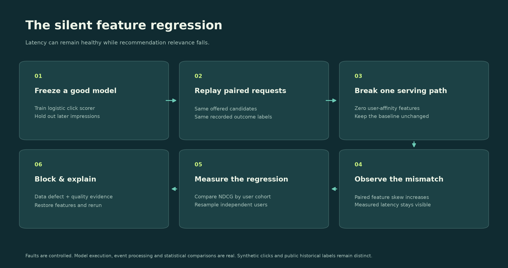
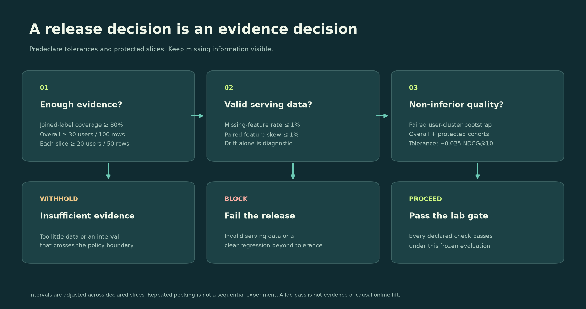
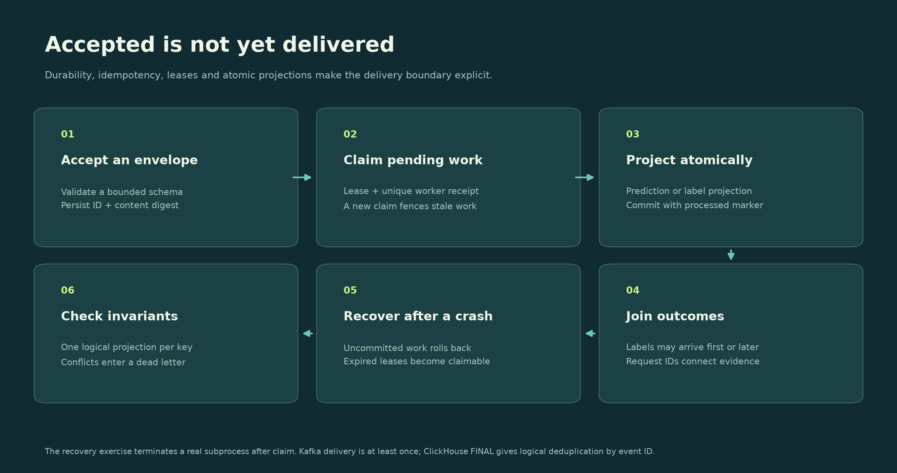
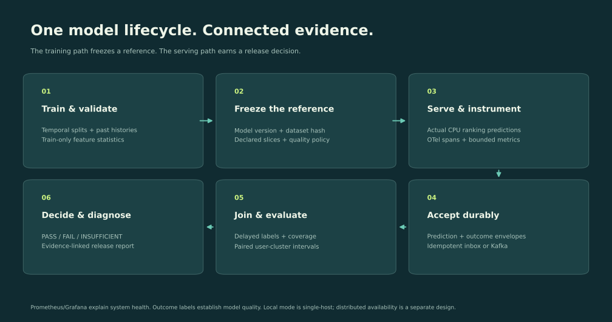

Learn model quality through your observability experience
This project connects platform standards, config-driven monitoring, telemetry correctness, validation gates and cardinality governance to the model lifecycle. It adds model-specific measurement and statistical decisions to an existing infrastructure foundation.
1. Run a healthy model
Run mql suite, then mql serve. Open http://127.0.0.1:7856. The default dataset is a seeded preference simulator: traffic and click outcomes are synthetic; model fitting, predictions, durable ingestion and evaluation are actual execution. The simulator is deliberately simple so you can reason about a planted fault.
Start in Overview. NDCG@10 rewards clicked articles placed near the top of the original candidate list. Inspect the number of eligible impressions, independent users, label coverage and dataset fingerprint. The learned click scorer, popularity heuristic and semantic-ID model are three different ranking approaches; the frozen learned model is the release baseline.
Exercise: Calculate DCG for relevance [0, 1, 1], then divide by ideal DCG. Inspect tests/test_evaluation.py for the independent worked-value check. Explain why impressions without positive labels are excluded and counted rather than assigned a fictitious ranking score.
2. Reproduce a silent serving defect

Choose A silent feature bug. The experiment zeros topic affinity, subtopic affinity and title overlap for returning users. The baseline uses correct features on the exact same requests. The monitor compares both feature vectors, while the evaluator joins recorded outcomes to each prediction version.
Exercise: Before running, predict which cohort will regress. Compare the new-user and returning-user rows. Explain why a healthy p99 prediction duration cannot establish recommendation quality. Restore the healthy path and rerun to verify recovery.
Code to read: data.py → models.py → engine.py → monitoring.py.
3. Separate drift, skew and quality
Run Drift without ranking loss. Scores are transformed with 0.3 + 0.4 × score. The mapping is strictly increasing, so ordering, NDCG and MRR stay unchanged while score distributions move. Calibration could change; this experiment does not claim calibration is preserved.
Run An upstream data defect. The monitor observes missing features before the scorer imputes zeros. Distribution change compares populations; paired skew compares two transforms for the same request. Neither substitutes for outcome-based quality measurement.
Exercise: Describe a benign population shift, a serving-code defect, and a label-confirmed quality regression. Explain why the JS threshold is diagnostic and illustrative rather than a universally calibrated alert threshold.
4. Earn a release decision

Run Labels arrive late. Only 35% of impression outcomes enter the first join. The initial verdict withholds approval. Click Deliver remaining labels and re-evaluate; the same prediction versions gain complete outcome coverage and a new decision. Initial evidence is retained in the report.
The default policy permits a quality decrease of at most 0.025 NDCG. Resampling whole users preserves within-user dependence. Overall, new-user and returning-user comparisons use Bonferroni-adjusted intervals. A pass requires the lower interval endpoint to meet the non-inferiority boundary. A clear failure has its upper endpoint below that boundary. Ambiguous intervals stay insufficient.
Exercise: Raise the required coverage in configs/news.json. Run a sparse experiment. Discuss how selective missing labels could bias a fully observed subset, and why coverage alone does not solve that bias. Do not keep tuning thresholds against a test set and call the result an independent evaluation.
5. Recover the telemetry pipeline

In Event pipeline, send one prediction. Acceptance persists an envelope; it is distinct from projection. Drain it, then inspect counts. A label can arrive before the prediction and still join later. Duplicate IDs with identical content are safe; reusing an ID with changed content is a conflict.
Run python scripts/resilience.py. A real child process claims an event and exits abruptly with code 77. After lease expiry, a fresh store processes the event. Verify one committed prediction, zero pending events and rejection of a repeated envelope.
Exercise: Kill a worker after a projection transaction begins. Explain transaction rollback, lease fencing, replay, dead letters and the difference between logical deduplication and distributed exactly-once delivery.
6. Try generative ranking
The semantic-ID baseline factors likelihood into topic, subtopic and item tokens. Taxonomy prefixes carry semantic meaning; the final article ID makes codes unique. Counts are learned only from training clicks and histories. Candidate-constrained decoding emits valid offered identities. This is a pedagogical autoregressive count model, not an LLM or a learned vector-quantization system.
With an existing Ollama service, run:
mql slm --model YOUR_INSTALLED_MODEL --url http://127.0.0.1:11434 --limit 6
Actual local inference returns a validated permutation of offered IDs. Targets are excluded from the prompt. Invalid or missing outputs are counted separately. OpenInference spans record model identity, measured duration and provider-reported token counts; raw prompts and outputs are not stored in traces. A small smoke sample always remains insufficient evidence for model promotion.
Exercise: Add article text that looks like an instruction. Confirm it cannot alter the allowed item universe. Measure failure rate and paired quality on the same valid cases. Define a fallback policy and score the full policy, including invalid responses, before comparing end-to-end systems.
7. Extend across model families
mql vision trains a real digit-image classifier. Pixel occlusion creates a controlled serving defect. Inspect accuracy, log loss and the confusion matrix. The seeded image holdout is not a temporal split and can share writers; its per-image interval is illustrative. Do not apply ranking metrics to classification outputs without defining the task.
The ranking scorer predicts clicks, but this project does not implement an ad auction or measure live CTR. MIND evaluations replay original offered sets; different rankings can change future user behavior, which recorded labels cannot establish.
8. Practice Senior Staff decisions
Read Architecture, Evaluation, Operations and Role coverage. Write a design review covering ownership, contracts, failure domains, backpressure, capacity, retention, change management and adoption. Ask another engineer to critique one decision and record the revision.
Mentoring exercise: Have a colleague onboard a configuration using only the README. Observe where they get stuck, improve the contract and document what changed. Actual organizational influence belongs in your professional examples; the lab provides concrete architecture and ML-evaluation material to discuss.
Evaluation and evidence
Frozen task and splits
An impression is one offered candidate set with its recorded binary outcomes. It is never split into arbitrary train and test rows. Synthetic train, validation and test periods are strictly ordered. The MIND importer sorts complete training impressions by timestamp, creates an internal temporal validation boundary, retains a bounded recent training window, and evaluates on later official development impressions. The official dev subset is the lab's held-out evaluation, not MIND's hidden test benchmark. Candidate lists are preserved; unseen unoffered items are not labeled negative.
Training-only click counts feed popularity features. Past histories supplied with each impression feed topic, subtopic and title affinity. Evaluation targets never enter feature extraction. The manifest hashes article metadata and full split contents, including histories, candidate sets, labels and ordering. The model's random seed and policy are recorded. Validation is held out for future tuning; the initial model uses fixed hyperparameters and does not optimize against the test set.
Metrics
For binary relevance, DCG@k is the sum of clicked-item gains divided by log2(rank + 1); NDCG divides by the ideal candidate ordering's DCG. MRR uses the first clicked candidate in the complete ordering. Recall@10 is the fraction of clicked candidates retrieved in the first ten positions. Equal scores use lexicographic article identity as a deterministic tie-break, rather than an expectation over ties. Report this choice when comparing libraries.
Zero-positive impressions are ineligible for these ranking comparisons and counted separately. This conditioning is a limitation of the reported task; they should be evaluated by other operational or outcome metrics in a real product. Baseline and candidate share identical eligible groups. The mean gives equal weight to eligible impressions, not users.
Uncertainty and release policy
The paired difference is candidate NDCG minus baseline NDCG. Bootstrap draws sample users with replacement and include each sampled user's full collection of eligible impressions. Sums and counts reproduce the impression-weighted population estimand. There are 1,000 default resamples, fixed seed 42, and percentile intervals. A Bonferroni adjustment covers the predeclared overall, new and returning comparisons. This is a learning implementation; alternatives and finite-sample behavior should be reviewed before production decisions.
Default minimums: 100 eligible overall impressions and 30 users; each protected slice needs 50 impressions and 20 users; joined-label coverage must reach 80%. The quality tolerance is 0.025 NDCG. If an interval crosses the non-inferiority boundary, approval is withheld. Missing features or paired skew above 1% independently block the release. This combines quality policy and input-contract policy; the report explains each reason.
Intervals are not valid for unlimited sequential peeking, adaptive slice selection or repeated test-set tuning. Time-correlated events, interference between users and nonstationarity need additional study. Missing labels may be nonrandom. Report label coverage by cohort and outcome delay distribution before treating complete cases as representative.
Drift versus degradation
Jensen-Shannon divergence uses training-derived feature bins, with smoothed histograms and bounded tails. Prediction-score drift compares frozen baseline and candidate outputs on the replay. The illustrative threshold of 0.1 is diagnostic, not a calibrated universal alarm. The score-shift scenario proves that a distribution change can preserve every ranking metric. Calibration, selection bias and serving feature correctness require separate checks.
Public data and live inference
MIND is a public research dataset under its own terms. Downloaded raw articles and behavior files are excluded from Git, Docker build context and release ZIP. Only aggregate measurements, source URLs and fingerprints are published. The upstream dataset mirror is taken from the maintained Recommenders downloader; original MIND information and terms.
Ollama smoke evaluations use actual model calls. A complete, unique permutation of offered IDs is required. Report validity over all attempted cases and ranking quality on the same valid cases for both models. This conditional comparison does not evaluate a production fallback policy. Small live samples are always labeled insufficient. Local compute cost is unmeasured, rather than reported as zero.
Digits classification uses real public images bundled with scikit-learn. Its metrics and split assumptions are task-specific. No laboratory result establishes production ML experience, business lift or large-fleet capacity.
Architecture and technical strategy

Decision 1: Make the lifecycle observable by default
data.py defines the impression contract; models.py owns training and prediction. engine.py runs controlled experiments through Store, joins outcomes and invokes task-aware evaluation. The CLI, API and browser share that engine. OpenTelemetry SDK spans measure actual operations and write JSONL locally; an optional OTLP exporter connects the same instrumentation to a Collector and Jaeger. Ollama model calls use OpenInference conventions.
Prometheus labels are finite model aliases, declared cohorts, known scenarios and outcomes. Request IDs and user pseudonyms belong in event storage, not metric dimensions. Sampling a trace is independent of counting operational metrics. Production-quality statistics should use a defined event sample with inclusion probabilities, not whatever traces happen to be retained.
Decision 2: Start with a durable single-host implementation
SQLite/WAL with synchronous=FULL supports an auditable local acceptance boundary. Envelopes have immutable IDs and content digests. Replays deduplicate identical envelopes; conflicts fail. Projection keys prevent multiple logical predictions per request/model. Labels can arrive in either order. Worker receipts fence reclaimed leases. Batch projection and processed markers commit in one transaction. Poison events enter a dead letter rather than preventing later work.
This is not a shared multi-zone database. API and workers in Compose share a volume on one host; it remains one failure domain. The actual crash exercise validates a process restart and durable local recovery. It does not validate disk loss, quorum failover or regional availability.
Decision 3: Add a separate distributed transport exercise
Compose runs API → Kafka → consumer → local projection plus ClickHouse. API events in this mode acknowledge the broker before returning 202. The consumer validates schema, persists/projects locally, writes the analytical envelope, then commits the Kafka offset. A crash between sinks and offset commit causes replay. ClickHouse uses ReplacingMergeTree; queries requiring logical deduplication use FINAL. Physical duplicate rows can temporarily remain. There is no cross-system transaction or blanket exactly-once claim.
The experiment runner uses the local inbox for repeatable fault experiments. The separate distributed smoke test sends real HTTP envelopes through Kafka and verifies the analytical sink, Prometheus scraping, Grafana provisioning and OTLP traces. Keep these two evidence paths distinct.
Decision 4: Keep model onboarding explicit
configs/news.json declares owner, task, feature order, protected cohorts, tolerance, coverage and retention policy. Feature order is validated. The gate consumes the declared quality parameters. This initial version supports one ranking feature pipeline; onboarding another feature schema requires an adapter and tests, rather than pretending any JSON can introduce a new model family. Classification and language-model examples use task-specific evaluators.
Multi-zone design proposal
For a production deployment, split stateless ingress, stream processing, analytical queries, evaluation workers and control-plane metadata. Use a replicated Kafka cluster with three availability zones and appropriate ISR/ack settings, partition prediction and label streams by a stable request key, and use a durable replicated database for idempotency and state. Separate high-volume event retention from aggregate histories. Store versioned model/dataset/policy artifacts in object storage. Make schemas backward-compatible and migrate consumers before producers.
A request-keyed join needs event-time watermarks, late/out-of-order policies, bounded state TTL, label corrections and model-version lineage. Backpressure should produce explicit retryable responses before exhausting buffers. Poison records need accountable reprocessing. End-to-end delivery dashboards should distinguish accepted, broker-acknowledged, projected, analytically visible and outcome-joined counts.
Proposed SLOs for review, not measured promises: durable ingress availability 99.9%; p99 projection age below 30 seconds under a specified load; loss accounted for by event identity; daily quality-label coverage tracked per cohort; minimum mature-label windows before release decisions. Capacity and error budgets depend on event sizes, retention and failure-domain choices.
At an illustrative 10,000 predictions/s and 1 KB/event, uncompressed ingress is about 864 GB/day before replication, labels and indexes. Calculate actual encoded payload sizes, peak/steady ratios and replay recovery headroom. Publish hardware, batch sizes and inclusion of network/disk/inference costs with every benchmark. The local benchmark intentionally measures only its disclosed WAL path.
Ownership and cross-team execution
The platform team owns transport, schema compatibility, SDKs and reliability. Model owners declare relevant slices, mature-label definitions and quality tolerance. Data producers own feature and label correctness; security partners own retention and access policy. An on-call playbook routes transport lag separately from serving skew and label-confirmed quality regressions.
Roll out in observation mode, compare against team-maintained evaluations, tune false-positive budgets using held-out incidents, then enable gates with documented rollback and exceptions. Run design reviews with recommendation, search and generative-model teams before making a shared abstraction mandatory.
The mentoring workshop asks engineers to diagnose the same fault from metrics, events and traces, then critique one platform decision. Record real feedback and adoption separately from the personal project's implementation.
Run, observe and operate the lab
Native application
Use Python 3.12 or 3.13 in a virtual environment. From the repository root:
python3 -m venv .venv
source .venv/bin/activate
pip install -e '.[dev]'
mql suite
mql serve
Open http://127.0.0.1:7856. The app binds only to loopback. /docs is the generated OpenAPI interface; /metrics exposes Prometheus metrics. /api/state reports the dataset fingerprint, known scenarios, projections and run evidence. Runs persist in .runtime/lab.sqlite3; SDK traces persist in .runtime/traces.jsonl.
Mutating browser requests reject a different Origin. Schemas reject unknown fields, raw-text additions, arbitrary model aliases, duplicate candidate IDs and nonfinite scores. This is a trusted local developer lab; it has no enterprise identity provider, tenancy isolation or production RBAC. Do not expose it publicly as a service. The public website is a static replay of saved measurements and contains no backend or credentials.
Native Grafana and Prometheus
If you already have official binaries, run:
python scripts/native_observability.py \
--grafana-home /absolute/path/to/grafana \
--prometheus-bin /absolute/path/to/prometheus \
--prometheus-port 0
Grafana defaults to http://127.0.0.1:3016/d/model-quality-lab. Port zero chooses an available Prometheus port; .runtime/observability/endpoints.json records the actual addresses. An occupied requested port causes refusal, never replacement. The launcher creates separate data, configuration and log paths, and stops only its own child processes when interrupted. Dashboards are provisioned from version-controlled JSON. python scripts/demo_traffic.py produces real local API calls so inference histograms and envelope counters contain observations.
Complete container stack
docker compose up --build -d
python scripts/integration_smoke.py --distributed
docker compose down
The stack includes API, Kafka, worker, ClickHouse, Prometheus, Grafana, OpenTelemetry Collector and Jaeger. Defaults: application 7856; Grafana 3016; Prometheus 9096; ClickHouse HTTP 8127; Jaeger 16696, all published to loopback. Broker ports are internal. Compose uses development credentials and a single broker; this configuration is a local integration exercise. Data volumes survive down; down -v intentionally removes only this Compose project's stored lab data.
/api/events in Kafka mode returns after broker acknowledgement. The worker projects and writes the analytical sink before committing offsets. The experiment runner's built-in scenarios retain their separate local inbox path. Use ClickHouse FINAL for logical event deduplication. Invalid schema messages are dead-lettered without copying raw rejected input. Offsets and explicit identities allow replay after a restart; there is no cross-sink exactly-once transaction.
Public recommendation data
python scripts/download_mind.py
mql --runtime .runtime/mind-run --mind-dir .runtime/mind run --scenario healthy
mql --runtime .runtime/mind-run --mind-dir .runtime/mind run --scenario feature_skew
mql --runtime .runtime/mind-ui --mind-dir .runtime/mind serve --port 7857
The downloader uses the upstream Recommenders mirror, prints archive hashes and extracts only the expected TSV files. Source data remains local. Read the dataset's research terms linked at https://msnews.github.io/. For existing downloads, point --mind-dir at a folder containing train/ and dev/, each with news.tsv and labeled behaviors.tsv.
Actual local language-model inference
Use an existing Ollama installation and model. No secret is required for the default local server. mql slm --model YOUR_MODEL --limit 6 performs actual calls. --url changes the local endpoint. Do not include credentials in URLs. The public evidence records the model, attempted cases, validity, matched quality, provider token counts and measured duration. Errors stay visible; a six-case run cannot authorize promotion.
Failures and recovery
- Quality regresses, latency stays healthy: inspect the paired feature/skew report and cohort comparison. Compare model and feature versions. Restore the correct feature path and verify quality using mature labels.
- Low label coverage: check the request join key, label maturity, cohort-specific delivery and late-event policy. Do not turn missing outcomes into negative labels.
- Queue grows: distinguish durable acceptance from projection. Check consumer logs, dead letters and lease age; restart the lab worker and verify identities rather than comparing raw log counts.
- Conflicting event identity: reject changed content under the same event ID. Label corrections require a designed versioned correction workflow; this lab deliberately refuses silent overwrites.
- Analytical sink fails after local projection: keep the Kafka offset uncommitted. Replayed envelopes deduplicate in local state and logically in ClickHouse.
- Blank Grafana panel: execute its query directly against the provisioned Prometheus source. API prediction latency panels require actual prediction requests and at least two scrapes. Experimental quality gauges describe the latest completed run, not continuous live quality.
Retention, access and governance
retention_days declares policy in the onboarding contract; automatic expiry is not implemented. For this local lab, stop producers, archive aggregate reports, back up state if needed, and remove the project's .runtime directory when discarding an experiment. A production implementation needs independently enforced TTLs for raw events, label joins, traces and audit evidence, plus deletion propagation and access review. Never publish raw source data, user-provided résumé files, credentials or .runtime databases.
Validation commands
python -m pytest
python scripts/integration_smoke.py --in-process
python scripts/resilience.py
python scripts/benchmark.py --events 10000
python scripts/build_illustrations.py
python scripts/build_dashboard.py
python scripts/export_evidence.py
Benchmark output records event count, payload size, acceptance batch, projection transaction batch, host and Python version. Its throughput is a bounded local experiment with a warm filesystem; it excludes inference and network. Docker verification runs separately in CI. See Validation for delivered results and the distinction between executed and proposed capabilities.
Role coverage and professional bridge
This project is shaped around the LinkedIn Senior Staff Software Engineer, AI Infrastructure posting. It targets its evaluation, monitoring, lifecycle and platform architecture themes. The complete implementation map is machine-readable in configs/requirements.json and visible in the app's Role alignment page.
| Area | Implemented evidence | Boundary |
|---|---|---|
| Evaluation | Frozen comparisons, cohort metrics, intervals, gates | Historical replay; no causal lift |
| Monitoring | Drift, missing features, paired skew, score changes | Diagnostic thresholds need calibration |
| Telemetry | Durable inbox, fenced workers, Kafka/ClickHouse adapter | Multi-zone availability is proposed |
| Lifecycle | Delayed outcomes, coverage and re-evaluation | Label correction is intentionally rejected |
| Productivity | Validated JSON contract, shared API/CLI/UI, CI | One ranking feature schema |
| Instrumentation | OTel SDK, OpenInference LLM spans, Grafana | No raw-prompt trace capture |
| Generative ranking | Semantic taxonomy tokens, autoregressive count model | No transformer training claim |
| Language models | Actual local calls and validity checks | Small smoke sample |
| Vision | Real digit classifier and pixel corruption | Illustrative holdout assumptions |
| Governance | Bounded schemas, pseudonyms, audit and retention procedure | Enterprise identity/TTL are exercises |
| Technical strategy | ADRs, SLO proposals, scale and rollout plan | Production adoption is separate evidence |
| Mentoring | Learning path and design-review workshop | Actual mentoring comes from career examples |
The résumé-to-project bridge is professional and deliberately general: observability roadmaps become model-monitoring standards; config-driven dashboard onboarding becomes a model contract; telemetry validation becomes model release evaluation; cardinality governance becomes bounded model telemetry; and cross-team consulting becomes an adoption and ownership design. No résumé, contact information or private production data is included in this repository.
Career duration, degree, architectural leadership and organizational influence remain professional qualifications. A personal lab can demonstrate technical work and learning; it cannot manufacture those credentials.
Suggested interview walkthrough: reproduce one serving defect, explain why latency was insufficient, inspect affected cohorts and confidence, trace delayed-label delivery, show crash recovery, and defend one distributed-systems tradeoff. Use real professional stories to explain decisions involving several teams.
Further primary reading: LinkedIn model health assurance, OpenTelemetry Python instrumentation, OpenInference specification, MIND dataset.
Recorded validation
The repository preserves executed results in evidence. Screenshots are actual browser captures of the local application and Grafana. Workflow diagrams are labeled illustrations, generated from editable code.
Executed locally
- 41 correctness tests passed, covering hand-calculated ranking metrics, paired clustering, gate policies, temporal leakage, event identity conflicts, late labels, concurrent consumers, stale-worker fencing, schema boundaries and the API.
- Eight model scenarios executed against 900 held-out synthetic impressions (16 for the sparse case). Healthy and monotonic-score-change runs passed; feature skew, missing features and reversed ranking failed; sparse and delayed-label runs withheld approval. The semantic-token baseline was measured independently of any expected verdict.
- The synthetic feature fault changed mean NDCG@10 from about 0.6372 to 0.4633. Traffic and click outcomes are simulated; model execution and statistics are real.
- A real child process exited with code 77 after claiming an accepted event. A fresh store recovered exactly one logical prediction; replaying its identical envelope did not add a second projection.
- A 10,000-event WAL benchmark recorded acceptance and projection duration, explicit batch sizes and host scope. Its rates exclude model inference, network and production replication.
- Real Ollama inference ran six ranking cases using
investigator-qwen3:4b. Four returned valid complete permutations; two failed validation. NDCG on those four valid cases was approximately 0.7827 versus 0.5723 for the frozen comparator on the same cases. This conditional, tiny sample remains insufficient evidence; it is not an overall superiority claim. - A real digit classifier evaluated 540 held-out images: clean accuracy approximately 98.15%; controlled pixel occlusion approximately 50.74%. Holdout and writer-dependence limits are recorded.
- MIND-small was downloaded from the maintained upstream mirror. Actual training used 8,000 temporally selected impressions, with 1,600 internal validation and 1,800 later evaluation impressions. Aggregate public-data reports record the fingerprint, measured quality, serving perturbation and cohort evidence. Raw dataset files are not published.
- Native Prometheus/Grafana and the live browser workflow are checked separately. The container integration workflow verifies the Kafka/ClickHouse/OTLP path in CI; its current Actions result is authoritative.
Evidence boundaries
Public walkthroughs load recorded results; the hosted website does not run a model or accept operational writes. Synthetic, historical-public-data, actual local-model and proposed architecture evidence are labeled separately. None of these bounded results demonstrates production capacity, multi-zone availability, causal business improvement or organizational adoption.
Enterprise authentication, automatic retention enforcement, label-correction semantics, learned semantic quantization and transformer training are documented follow-on exercises. The implemented code does not claim those capabilities.